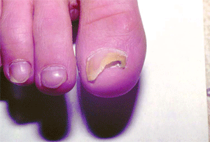
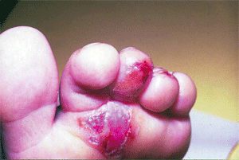
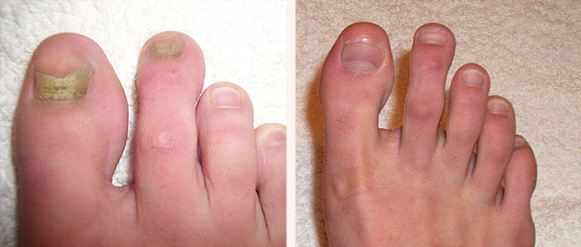
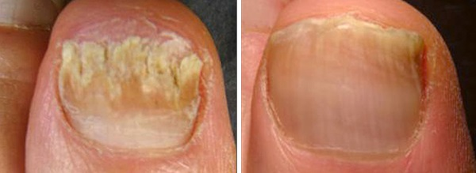
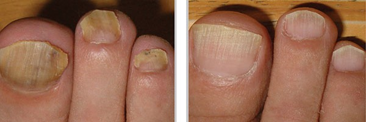

Bőrgomba: milyen veszélyeket rejt ez a betegség és hogyan szabadulhatunk meg ettől örökre.
Statisztikailag kimutatható, hogy a magyar emberek 76%-a szenved valamilyen gombás fertőzéstől. A leggyakrabban, a parazita gomba a bőrt, a hajat és a körmöket támadja meg. Parazitológusunk, Dobos Péter, a gombás betegségekből eredő súlyos veszélyről fog beszélni, illetve arról, hogyan oldhatjuk meg ezt a problémát.
A lábmikózis vagy ismertebb nevén, a lábgomba, az elmúlt két évtizedben járványszerűen terjedt el. Nem csupán emberektől, állatoktól vagy háztartásbeli tárgyakról kaphatjuk el a betegséget, hanem akár már cseppfertőzés útján is. A betegség nem megfelelő kezelése komoly szövődményekhez vezethet.
Milyen veszélyt hordoznak a gombás fertőzések?
A betegség klinikai bemutatása egy módon történhet: a gombás fertőzéseket gyakran találhatjuk meg a lábujjak és a körmök között. Később, a gyulladás továbbterjed az egész lábfejre. Általánosságban, a mikózist annak fejlettségi szakaszai alapján határoljuk el:
A kezdeti szakasz.
A lábujjak közötti terület enyhe hámlásából és az apró felületi repedésekből felismerhető. Sem a hámlás, sem a repedések nem okoznak problémát a páciensnek.
Azonban a betegség elhanyagolása nagyon gyorsan a második szakaszhoz vezet: Pikkelyes szakasz.
Hólyagok és allergiás kiütések jelennek meg a lábfejen, amelyek szárazságot, érzékenységet, viszketést és tályogokat okoznak.
A körmök elvesztik a fényük, megvastagodnak, elszíneződnek és eldeformálódnak, részlegesen letöredeznek, különösen a körmök szélén. A zárt orrú cipők hordása szinte lehetetlenné válik, a séta túl sok fájdalmat okoz.
Ha a lábfejet és a sípcsont körüli területet gennyes hólyagok borítják, akkor az esetek 98%-ában biztosan megjósolható, hogy a bőrkiütések a bőr egészére továbbterjednek. A gombás fertőzések még a belső szervekre is veszélyesek lehetnek! Repedések, gennyes sebek alakulhatnak ki és sejtpusztulás mehet végbe, amelyek súlyos komplikációkat okozhatnak. A betegnél magas láz, duzzanatok, gyengeségérzet és fejfájás jelenhet meg.
Még a leggyakoribb tünetek is (viszketés, vörösség és hámlás) belső szervi problémákat okozhatnak.
Ennek oka az, hogy a test nem képes megszabadulni a méreganyagoktól segítség nélkül. A legyengült immunrendszer nem küzdi le a fertőzéseket, amely komoly allergiás reakciókhoz és akut krónikus betegségekhez vezet.
Ha ezt nem kezelik megfelelően, a gombás fertőzés súlyosabb formát is ölthet.
A legtöbb gyógyszer, kenőcs és népi hagyomány CSAK CSILLAPÍTJA az első tüneteket, ahelyett, hogy megszüntetné azokat. Ezért, fontos, hogy mindig a MEGFELELŐ eszközöket használjuk.
Hogyan védhetjük meg magunkat és a családunkat a fertőzéstől?
Az arra való várakozás, hogy a bőr vörössége magától elmúljon, fatális tévedés. Ez könnyen az érintett bőrfelület amputációjához vezethet. Miután észrevettük magunkon a gombás fertőzések főbb tüneteit:
- A repedéseket a lábujjak között;
- A megvastagodott bőrrétegeket;
- A viszketést;
- A vörösséget;
- Az égető érzést;
- A törékeny, könnyen lecsorbuló körmöket,
fontos, hogy azonnal megtegyük a szükséges lépéseket. Ne feledjük, hogy a népi módszerek nem elég megbízhatóak egy ilyen komplikált, gonosz betegség esetében, mint amilyen a gomba. A fertőzés megszüntetésében 2 aktív összetevő segíthet:
- Farnezol - egy aktív kémiai elem, amely fertőtleníti és kiszárítja a lábfejet;
- Climbazol - egy gombaölő vegyület. A climbazol megállítja az élesztőgombák kialakulását, megszünteti a viszketést és elpusztítja a gombás sejteket.
A farnezol és a climbazol egyaránt megtalálható egy újgenerációs gombaölő termékben, a Fungalor-ban. A két elem mellett természetes összetevők kombinációja található a készítményben, amelyek gyengéden ápolják a bőrt, allergiás reakciók kiváltása nélkül. A Fungalor már az első használatot követő 12 órán belül eltávolítja a bőrgomba első jeleit.
Hogyan működik a Fungalor?
A Fungalor kizárólag gyógynövények és esszenciális olajok természetes kivonataiból áll.
Klinikai vizsgálatokkal bizonyították, hogy a Fungalor-ban található aktív összetevők kombinációja több szinten fejt ki hatást:
- Megállítja a gomba növekedését;
- Megszünteti az izzadást;
- Megszünteti a gyulladást és a viszketést;
- Megszünteti a hámlást;
- Leküzdi még a legveszélyesebb gombatípusokat is.
A Fungalor könnyen használható: csak mosd meg a lábad és kend be egy vékony rétegen a termékkel.

- Az esetek 98%-ban, a gombás fertőzések első jelei (hámlás, viszketés, vörösség, repedések) mindössze egyetlen hét alatt eltűntek;
- Minden használónál felére csökkent a láb túlzott izzadása;
- A páciensek 92%-ánál megfigyelhető volt a regeneratív folyamatok aktív növekedése;
- A körömlemezek állapota az esetek 100%-ában javult;
- Egy 30 napos kezelést követően a páciensek 97%-a teljesen megszabadult a gombától.
A szövődményekkel szembeni védelemhez fontos, hogy az első tünetek megjelenése után minél hamarabb elkezdjük a kezelést.
FIGYELEM!A hamisított Fungalor csomagok értékesítése jelentősen megnőtt mostanában, ezért fontos, hogy kizárólag a gyártó hivatalos weboldaláról rendeljetek a termékből.
Hozzászólások
Összes hozzászólás (147)
Sosem gondoltam volna, hogy a gomba ennyire veszélyes lehet!
Sokat szenvedtem a gombás fertőzések miatt. Több, különböző kenőccsel is bekentem magam, de a fertőzés mindig visszatért. Az orvos azt mondta, sosem gyógyultam meg teljesen a betegségből, csupán csak a tüneteket tüntettem el. Azt tanácsolta, hogy próbáljam ki a Fungalor-t - 2 hónapja fejeztem be a teljes kezelést, és a körmeim jobbak, mint újkorukban! :))
Hűha, ez az eredmény elképesztő! Nekem is ki kellene próbálnom, az ujjaim között mindig hámlik a bőröm...
Azt hittem, minden gombaölő gyógymód beválik...
Én is azt hittem, de tévedtem. Semmi javulást nem láttam, ezért nagyon aggódni kezdtem a lábaim szépségéért, és ami még fontosabb, egészségéért. Szerencsére, még időben találtam rá a Fungalor-ra.
A megfelelő higiéniáról se feledkezzetek meg, és a gomba többé nem lesz gond!
Én pont ebben a hiszemben voltam! Sosem sétáltam mezítláb, mindig odafigyeltem magamra, és mégis állandóan elkaptam a fertőzést. Nekem is ki kellene próbálnom ezt a módszert - remélem, segíteni fog.

Még szép, próbáld csak ki! Nekem is borzasztóan gombás volt a lábam, de halál komolyan, a Fungalor 2 heti használatát követően, nyom nélkül eltűnt a betegség! Ha nekem segített, gondolom, nektek is kellene :)
Teljesen megdöbbentem! Sosem gondoltam volna, hogy a gomba ennyire elszaporodhat. Óvatosabbnak kellene lennem, ki tudja, talán érdemes lenne a Fungalor-t a megelőzés céljából is használni?
Persze, arra is jó! Az apukám is használta ezt a gombaölőt, és egy hét alatt meggyógyult. És mivel az immunrendszer nem véd meg minket a gombás fertőzésektől, ezért mindig tartunk otthon ebből a termékből. A vidéki utak, az edzések, medencézések, illetve az ehhez hasonló alkalmakkor az egész család használja a terméket, megelőzés gyanánt. Idén, még senki sem lett gombás, pedig régen ez a probléma az egész családot átjárta.